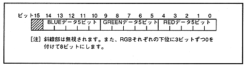
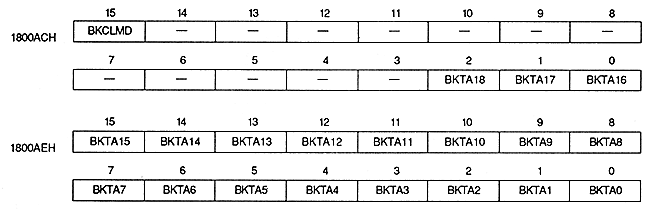

Figure 7.5 Bit structure of back screen table data

■ Back screen table address register
Back screen table address register specifies the color mode of the back screen and the top address of the table. This is a write-only 32-bit register located at addresses 1800ACH to 1800AEH. The value is cleared to 0 after power-on or reset, so be sure to set it.

Back screen color mode bit : BACK color mode bit (BKCLMD), bit 15
Specify the color mode of the back screen.
BKCLMD
Back screen color
0
Make a single color
1
Specify line by line
Back screen table address bit : BACK color table address bit (BKTA18 ~ BKTA0)
Specify the top address of the back screen table on VRAM.